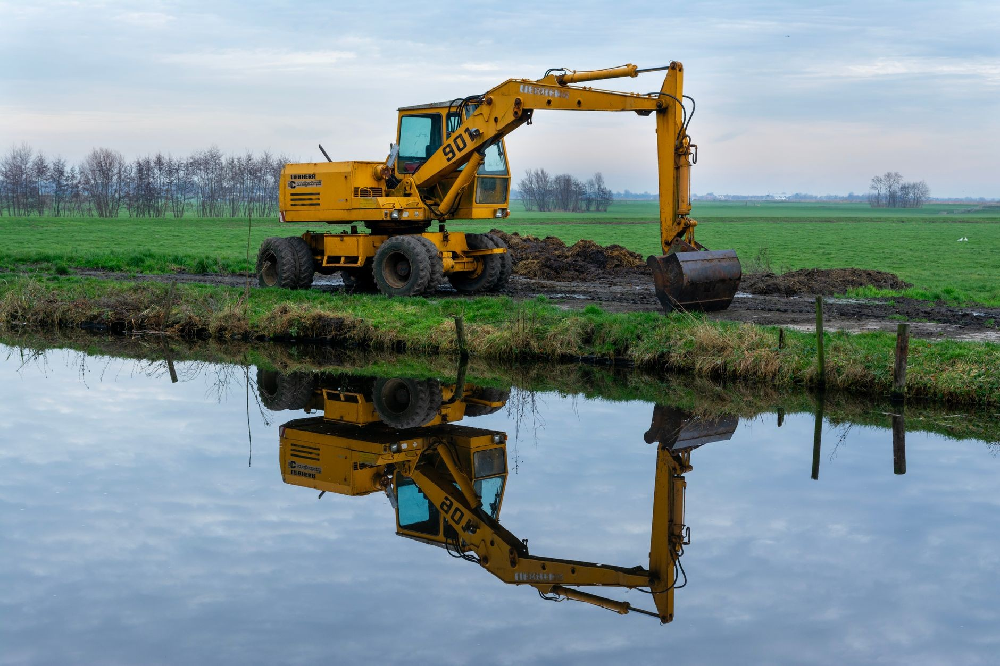
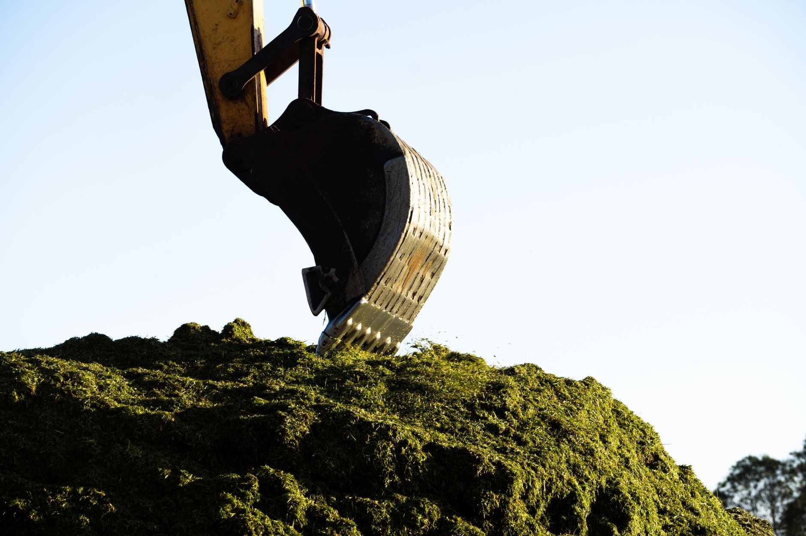
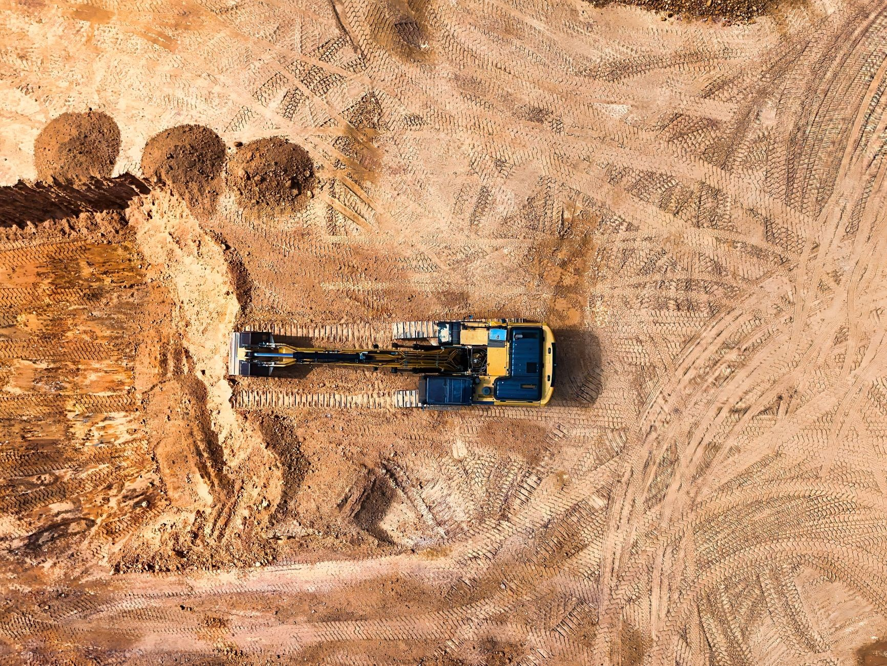
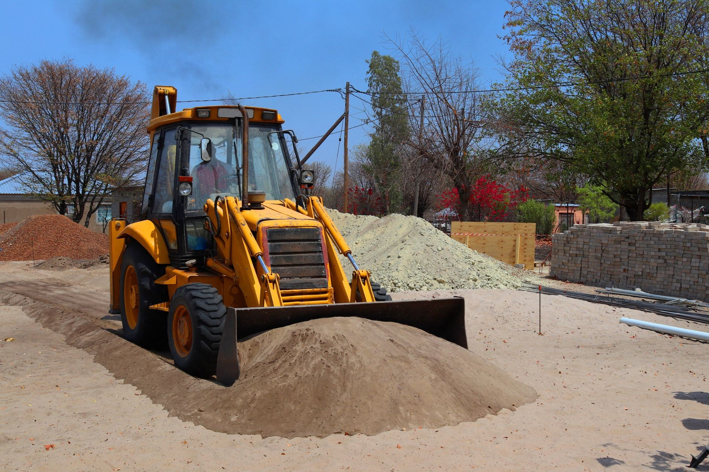
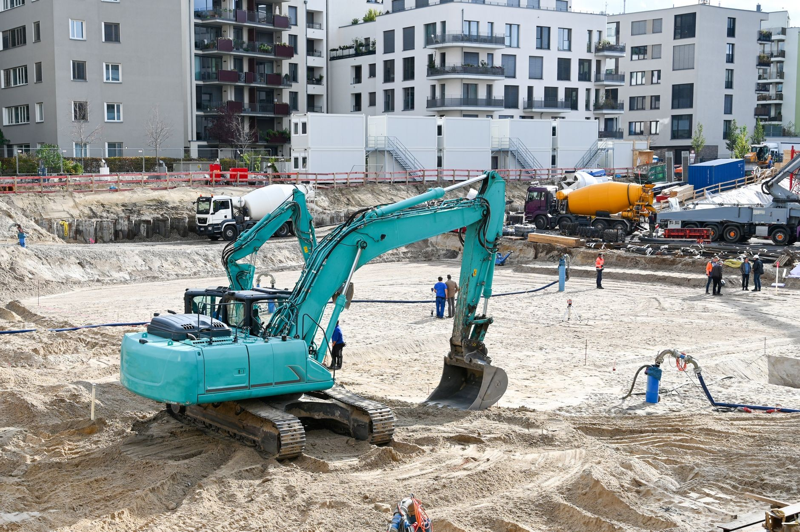

Wykopy i wywóz ziemi. Minikoparka z wywrotką w Radomiu.
Kopiemy pod fundamenty, przyłącza i drenaże, równamy działki, a urobek od razu zabieramy wywrotką. Jeden telefon załatwia i maszynę, i transport.
Zadzwoń teraz +48 792 158 213- Baza w Radomiu
- Minikoparka i wywrotka
- Ocena 4,9 w Google
„Najlepsza firma z jaką współpracowałem, przede wszystkim jakość wykonania usługi, terminowość co dla mnie j…”konrad Dusza
„Jak najbardziej polecam usługi firmy.”Marek Jóźwicki
„Profesjonalne wykonanie, p. Damian doradzi klientowi jakie rozwiązanie jest najlepsze…”Krzysztof Jasiński
Wiesz, na czym stoisz - na każdym etapie
Od pierwszego telefonu do odbioru roboty - krok po kroku.
- 01
Telefon
Mówisz, co trzeba zrobić i gdzie: wykop, przyłącze, niwelacja, wywóz ziemi.
- 02
Rada i wycena
Pytamy o dojazd i grunt, doradzamy rozwiązanie, podajemy cenę i dzień wjazdu.
- 03
Praca minikoparką
Kopiemy, zasypujemy i równamy, a urobek od razu ładujemy na wywrotkę.
- 04
Teren gotowy
Zostawiamy posesję gotową dla kolejnej ekipy albo pod ogród.
Prace ziemne
Rodzaje prac, które wykonujemy: wykopy, niwelacja terenu, załadunek i transport ziemi.





Prace ziemne minikoparką
To, po co dzwonią do nas najczęściej. Cenę podajemy po rozmowie o terenie.
- Wykopy pod fundamentyWybieramy grunt pod ławy i płytę na głębokość z projektu. Ziemię zostawiamy na działce albo wywozimy.Wycena →
- Przyłącza wody, kanalizacji i prąduWąskie wykopy od budynku do granicy działki. Po ułożeniu rur zasypujemy i równamy teren.Wycena →
- Drenaż i odkopanie fundamentówOdkopujemy ściany pod izolację albo drenaż, a po robocie zasypujemy i zagęszczamy.Wycena →
- Szamba i zbiornikiWykop pod szambo, przydomową oczyszczalnię albo zbiornik na deszczówkę, z zasypaniem wokół.Wycena →
- Niwelacja i korytowanieRównamy działkę pod trawnik, korytujemy pod podjazd i kostkę, rozplantowujemy ziemię.Wycena →
- Transport wywrotkąWywóz ziemi, gruzu i urobku, dowóz piasku, ziemi ogrodowej i kruszywa na budowę.Wycena →
Co mówią klienci
Najlepsza firma z jaką współpracowałem, przede wszystkim jakość wykonania usługi, terminowość co dla mnie jest bardzo istotne i podejście do klienta super .Pan Damian ,z którym miałem.przyjemność współpracować to...konrad Dusza
Jak najbardziej polecam usługi firmy. Bezproblemowy kontakt. Pan Damian robił wykop pod fundamenty domu, szybko sprawnie i myślę że cena adekwatna do wykonanej usługiMarek Jóźwicki
Profesjonalne wykonanie, p. Damian doradzi klientowi jakie rozwiązanie jest najlepsze do wykonania roboty. Polecam w 100% firmęKrzysztof Jasiński
Masz wykop albo ziemię do wywiezienia?
Zadzwoń i powiedz, co trzeba zrobić. Cenę i termin poznasz przed pracą, nie po niej.